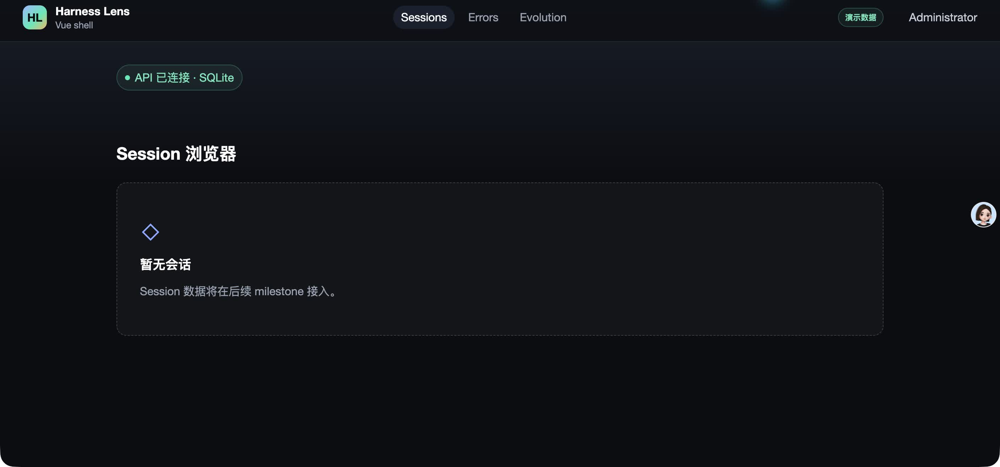
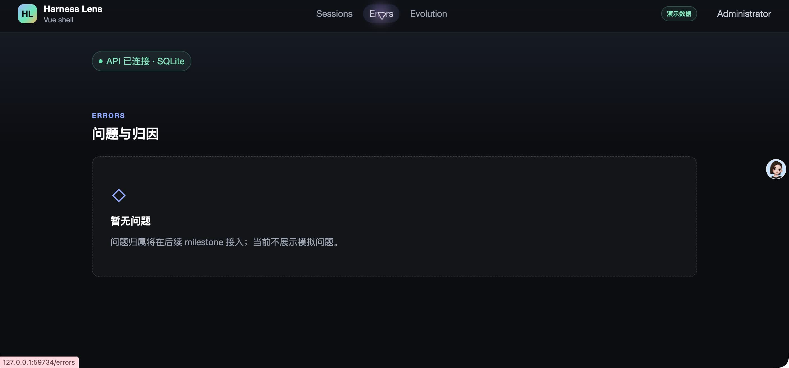
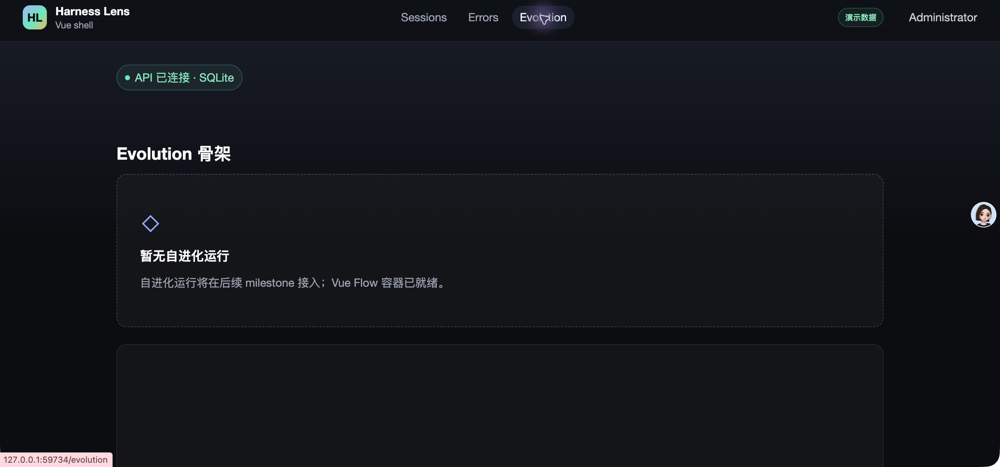

- Issue
- #37 · M2-05 idempotent replay
- PR
- #91
- Commit
- 39eeeba
- Runtime
- FastAPI + Vite + Chrome
- Database
- 临时 SQLite（<redacted>）
- Local data
- 4 roots / 66 JSONL / 62 subagents
Harness Evolution · PR #91
M2-05 幂等重放集成冒烟报告
在独立临时 SQLite 上完成真实本地会话首次重放、连续零写入重放，并通过真实 Chrome 与浏览器 E2E 验证现有应用壳、导航、控制台和响应式布局。
4根会话
66Agent payload
0第二次重放写入
11重放专项测试
Environment and Artifact
2026-10-25 · macOS · SQLite · FastAPI + Vite + ChromeScenario Matrix
12 pass| # | 场景 | 结果 | 观测 | 证据 |
|---|---|---|---|---|
| 01 | 首次真实重放 | PASS | 4 个 root、66 个 payload 全部 imported；canonical 表写入 4 families、66 agents、53 user turns。 | data:replay:sessions imported=66 SQLite counts 4/66/53/66/66 |
| 02 | 连续重放零写入 | PASS | 第二次重放为 0 imported / 66 skipped / 0 failed / 0 errors。 | data:replay:sessions repeat sync_runs completed 66/66 |
| 03 | 结构指纹稳定 | PASS | 两次重放前后 session、Agent、source 游标结构指纹一致。 | SHA-256 304d281c668e6363b3351040230da5f071f988c17b25c80fac73eb68db6faf74 |
| 04 | Payload 只读 | PASS | 第三次重放仍为 0 imported / 66 skipped；payload 元数据指纹未变化。 | SHA-256 b0ae00a83ebe5a38651e999bf4baa402c35b479023a5d373ae1c7113a8b50b57 |
| 05 | 批次审计与脱敏 | PASS | 首次批次 66 done / 66 imported，仅含 1 条 MISSING_PARENT_TOOL_USE_ID；第二次 66 done / 66 skipped 且无错误。 | sync_runs records_total=66 errors contain stable codes only |
| 06 | Child 变化与 line_count | PASS | 自动化契约验证 child 内容变化会重建 root，并同步 source line_count；未变化 sibling 游标保持。 | test_changed_payload_refreshes_source_line_count test_new_child_and_parser_upgrade_rebuild_only_affected_root |
| 07 | Payload 删除保留旧树 | PASS | 自动化契约验证 payload 消失时记录 MISSING_PAYLOAD_SOURCE，受影响 root 禁止删除重写，旧业务树与游标保留。 | test_payload_deletion_blocks_root_rebuild_and_preserves_tree |
| 08 | 单 root 结构失败隔离 | PASS | 自动化契约验证结构失败只回滚该 root，旧树和 processed 指针保留，其他 root 继续。 | test_structural_failure_isolated_and_keeps_old_cursor |
| 09 | Progress 回调异常 | PASS | 已提交 root 不因 progress 回调异常被重新标记失败，批次追加稳定 SYNC_PROGRESS_FAILED。 | test_progress_callback_failure_does_not_reclassify_committed_root |
| 10 | 真实 Chrome 页面 | PASS | 完成临时管理员登录与首登改密，访问 Sessions、Errors、Evolution；导航、demo 角标和空态正确。 | screenshots/01-sessions.jpg screenshots/02-errors.jpg screenshots/03-evolution.jpg |
| 11 | 浏览器 E2E | PASS | 真实 Chrome E2E 4/4；控制台无意外 warning/error，390px 主页面无横向溢出。 | pnpm test:e2e -- m1-shell 4/4 |
| 12 | 数据卫生 | PASS | 本地轨迹与 SQLite 未被 Git 跟踪；报告未包含 payload 正文、凭据、token 或绝对路径。 | verify:local-data Git status only report directory |
Issues and Observations
No defects foundNo defects were found.
Evidence
3 screenshots


Automated Coverage Assessment
4 areas reviewed| 区域 | 覆盖 | 结论 | 建议 |
|---|---|---|---|
| 首次与重复 replay | 真实本地数据 + 独立临时 SQLite | 4/66 payload 首次写入，连续重放零副作用。 | 保持真实本地数据验证为手工/发布前冒烟。 |
| 变更、删除、失败隔离 | 自动回归（真实 repository） | hash/parser/line_count、payload 消失、结构失败与 progress 异常都有确定性覆盖。 | CI 保留 SQLite 与 MySQL 双方言 replay contract。 |
| 浏览器壳 | Computer Use + CDP E2E | 登录、改密、三入口、控制台与 390px 均正常。 | 后续会话列表 API 接入后增加数据态浏览器回归。 |
| 本地数据隐私 | Git 清洁态 + 报告扫描 | 本地 payload、SQLite 与绝对路径未进入提交物。 | 继续由 verify:local-data 门禁保护。 |
Conclusion
通过当前提交的真实 replay、幂等游标、失败隔离、审计与浏览器集成均正常，未发现需要修复的集成缺陷。
- 首次 66 imported，后续连续 replay 均 0 imported / 66 skipped。
- payload 与 canonical 结构指纹在重复运行后保持不变。
- 真实 Chrome 页面与 E2E 无意外控制台错误。
证据源：真实本地会话、独立临时 SQLite、replay CLI、聚焦 pytest、Computer Use 截图与真实 Chrome E2E。生成 HTML 不应手改。